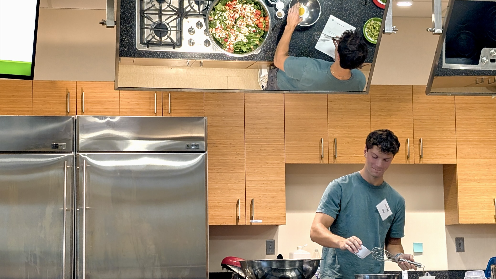

As a high-schooler set on cruising through college to reach medical school—yes, I would most certainly become a doctor—I never once considered that my experiences as a biology student could lead me off the path I had set years ago. However, during my first two years as an undergraduate at USC, I took several biology courses with professors who encouraged me and likeminded peers to consider a future in the broader field of scientific research. Through class assignments, I learned to think in new ways, designing lab experiments in BIOL 303: Fundamentals of Genetics and BIOL 302: Cell and Molecular Biology, while diving deep into the works of Darwin in BIOL 301: Ecology and Evolution.
Particularly in BIOL 301: Ecology and Evolution Lab , led by Teaching Assistant Sierra Jaeger, I learned to associate a creative approach to data collection with biological research. My expectation of biological research was shattered by my experience in this lab during my first semester as a sophomore. As a class, we embarked on field trips to scout test sites, collect data, and consider the implications of the questions we formulated. Our semester-long experiment with fruit flies (D. melanogaster) served as a simple test, demonstrating that populations evolve despite unnatural (“laboratory”) conditions (e.g., see "Research Article for BIOL 301L"). The process of this experiment taught me to take a far more creative approach to scientific research than I had previously deemed necessary. Not only could I enjoy the organizationally-intense processes of designing and carrying out experiments, I could also interpret the collected data to answer secondary questions, spark new connections, and broaden the implications that my research might have.
That same semester, I began working in the Dudycha Environmental Ecology and Evolutionary Genomics Laboratory at USC, performing a genetic cross project with the end goal of determining the degree to which inbreeding depression impacted population-level fitness in Daphnia dentifera (“the water flea”). What I learned in Ecology and Evolution Lab not only supported the bank of knowledge required for performing research in this field but also improved my confidence in shaping projects to satisfy changing expectations and unanticipated obstacles. While not initially interested in the genetics project at hand, I considered that its current focus would serve as a helpful “jumping-off” point for any biological research I may want to perform in the future. Now, the project has metamorphosed into a larger-scale experiment related to the effects of common pharmaceutical wastes on population-level fitness for D. pulicaria (e.g., see "Daphnia Genetic Crossing Research Proposal"). I spent many weeks formulating plans to transform this project into something applicable for my medicine-related ambitions and am constantly re-evaluating the end goals of this project to adapt to various changes. The implications of my research foster my ever-maturing creative nature, a necessary characteristic for any good scientist—particularly during an era in which science is increasingly politicized.
Together, these experiences introduced me to new ways of thinking and learning, allowing me to explore the opportunities of a medicine-related, yet, entirely new field of work and academia. Among several others, these select experiences catalyzed a shift in my career aspirations. As a student at the University of South Carolina, I have crafted my student experience to bolster my character traits of creativity, organization, and resolve through academic and extracurricular work. Now, I work toward earning a PhD in immunology, microbiology, or pharmacology and hope to contribute to the global fight to better the human condition.
As a freshman at USC, I fundamentally misunderstood what it meant to be a “researcher.” Part of this misunderstanding stemmed from my lack of exposure to research-oriented courses and jobs, as well as a lack of care to learn about the broad field. During my first semester at USC, however, my mindset changed. In the Honors section of BIOL 303: Fundamentals of Genetics, Dr. Bert Ely (the professor) based the course content on recent (within the past decade) genetics research. Each class began with a student presentation on recent genetics research articles, and the ensuing lecture covered the genetics concepts involved in the presented articles. While all scientific education is research-based, Dr. Ely pushed me to learn like researchers do—reading primary sources (research articles) to make rational generalizations and to apply those generalizations in other contexts. Early in the course, I struggled to make necessary connections. In some cases, the data were too plentiful and the implications were not so easy to identify. For example, my personal study of mutational load in embryonic stem cells (e.g., see "Research Paper for BIOL 303") involved articles with data presented in formats previously unknown to me (e.g., diagrams for whole-genome analyses). However, I became better accustomed to niche genetics standards and concepts, developing the skills necessary to parse information in an efficient and effective manner. Good research is built upon a foundation of literacy—determining what information is important, drawing connections between sources, and forming questions and hypotheses to expand beyond existing information.
Research also requires testing, and this phase of the research process is diverse in methodology. For example, basic genetics research often involves the analysis of genetic information, in the form of DNA or RNA. I learned to obtain DNA samples from humans, perform PCR reactions to multiply the “data” (DNA) obtained by sampling, and analyze that data with gel electrophoresis (a method of determining whether gene segments of interest are present in a sample). As someone generally interested in medical technology, these basic genetics experiments excited me and helped me begin to realize my interest in medical research. At this stage, however, I had not experienced the true breadth of the field of medical research and would not consider myself “hooked.”
But, in the spring semester of my sophomore year, I began volunteering for The Cancer Prevention and Control Program (CPCP) at USC, which provided me the opportunity to witness nearly every major type of scientific research under the umbrella of one massive project—the REMEDY Study. Broadly, this study involved research into the prevention of gastrointestinal (GI) cancers, particularly those related to obesity or inflammatory conditions of the digestive tract. The study comprised joint efforts between USC's schools of medicine, pharmacy, and public health, led by the renowned inflammation researcher Dr. James Hébert.
On the medical and pharmaceutical sides, researchers studied the risk factors for GI cancers, looking specifically at gut microbiome diversity. Researchers from all three schools worked to build the "Dietary Inflammatory Index” (“DII”) as a means of quantifying and comparing the inflammatory consequences of ingested foods. On the public health front, in the form of an intervention, researchers worked with patients to manage any present, non-genetic risk factors for GI cancer (primarily obesity). In the intervention classes, dieticians and assistants, such as myself, taught the importance of an overall healthy lifestyle (including diet, exercise, sleep, and mindfulness); though, the primary focus of the intervention involved helping participants build healthier, more anti-inflammatory diets (e.g., see "REMEDY Intervention Lesson Plan Excerpt"). What separates REMEDY from other research on healthy lifestyles is the focus on anti-inflammatory diets. While anti-inflammatory foods are generally considered healthy, not all healthy foods are necessarily anti-inflammatory (e.g., whole grains comprise a necessary part of a healthy diet but are generally pro-inflammatory or have a neutral effect). As a student interested in healthy living and dieting, I was intrigued by the unique approach to preventing cancer and other inflammatory diseases, witnessing how participants reacted to these major dietary changes in real time.
Interacting with the participants in REMEDY Intervention classes helped me realize my love for research with human participants. As someone initially interested in becoming a doctor because of the opportunities to help real people live better lives, I enjoyed the experience of positively impacting the health of others through medical research. On a weekly basis, I witnessed the same group of people actively making changes to their lifestyles and reaping the benefits that ensued. At the same time, I experienced the benefits myself by implementing what I learned and taught in my own eating habits. I have learned through REMEDY that nutritious, anti-inflammatory meals are paramount to living a cancer-free lifestyle. However, the average American is generally reluctant to build a diet based on this ideal because of numerous systemic issues, the greatest among these issues being access to and affordability of healthy foods, as well as, education on choosing the right foods and preparing them for enjoyment. These issues drive my commitment to lowering the barriers to healthy eating through a career in research and public outreach. Overall, exposure to the interactions between researchers on all sides of the REMEDY Study further shaped my career aspirations, broadening my interests in public health and pharmaceutical research.
In the field of human health research, there are two sides to the research: that which occurs with and without human subjects present. In my freshman-year genetics course, I learned basic lab techniques, giving me an inside look into the “background” of many human health experiments. I learned to compartmentalize projects in terms of data collection (requiring participants) and data analysis. In larger projects, like REMEDY, a different set of researchers (with different backgrounds and goals) performs related experimentation at separate times and places. However, these parts of the experiment are connected, so there exists a need for professionals well-versed in both sub-fields. I previously enjoyed the idea of becoming a doctor because of the diversity within the profession. You can see patients, run tests, consult research, and correspond with professionals in an array of related fields—and, each of these duties contributes to the “whole” of human medicine. I have learned that the field of research contains this same occupational diversity and, certainly, opportunities to concentrate on one’s strong suits or preferences. As an avid learner, I appreciate the idea of a more flexible career—one that can change with new interests and goals. My experiences in the Fundamentals of Genetics course and the REMEDY Intervention set me on what I believed to be a course where I must choose the side of medicine I prefer; however, I overcame this idea of a false dichotomy and made a significant change to my career goals. Since I appreciate the flexibility of research and the creative opportunity to chart my own course, I find it prudent to chase a career in research.
Source: Connecting Health Innovations, LLC. (2017). REMEDY Intervention Course Materials.
To argue that personal struggles ought to be motivational is certainly overstated. Intelligent people learn from their mistakes, and they capitalize on that learning. However, in the midst of significant obstacles, “learning” is easier said than done—especially when the obstacles are intangible and hard to control. I had not faced any serious health problems before college. In fact, I was quite proud to live a healthy life and thankful to those who helped me achieve it. The transition to college changed my situation, though. On just one year’s time, I was plagued with a litany of health scares: well over a dozen infections, chronic hypertension, and mental health issues. Medications helped sometimes, but not always. Regardless, frustration and worry consumed me as my grades slipped, social life collapsed, and motivation to continue doing great things was non-existent.
While I still face related struggles, my situation improved immensely during junior year. Though the symptoms of illness subsided, my motivation to achieve was still lacking. I needed to find a way to cope with the facts that I had lost time and momentum and that I was “behind” (in experience and achievement) compared to the high-achievers I identified with. I questioned the reasons, scientifically, as to why my illnesses had occurred, why symptoms lasted for so long, and why I still felt the way I did. Those questions motivated me to learn more about the conditions I faced, allowing me to realize that my love for learning had not died off. Not only did I rediscover my love for learning, I also had realized that these my two-year health episode contained great potential for scientific exploration. Through these experiences, I carefully observed my symptoms to develop research questions.
For example, I wondered whether there existed a connection between climate and the development of mood disorders (mainly, bipolar disorder). During this two-year period in which my symptoms were most significant, I began to notice trends—seasonality. As the climate shifted from hot and sunny to cold and dark, I generally experienced heightened senses of sadness, worry, anxiety, and hopelessness. These symptoms comprised my baseline mood during the cold months. However, when temperatures began to rise and the sun shone longer, some of those emotions largely disappeared. My new emotional baseline consisted of frustration, anxiety, and excitability. On days when the climate changed drastically, so did my mood. I seized the opportunity to develop a preliminary research project (a literature review) for the final project (e.g., see "Research Paper for ANTH 552" below) in ANTH 552: Medical Anthropology at USC.
Dr. Simmons, the professor structured the course to focus on newer research, contributing to my pursuit of graduating with leadership distinction on the research pathway. His lectures reflected his own post-doctoral research in the Dominican Republic and Zimbabwe, where he worked with teams of public health experts to educate civilians on disease prevention and treatment. Each week of class began with structured debates on medical controversies and grey areas, particularly those involving disenfranchised or underprivileged people groups. For the final project, I hoped to demonstrate an example of how corporate greed fuels the fire that burns—figuratively and literally—our planet and its limited resources. Extreme heat, after all, is more common nowadays, existing as a direct result of greenhouse gas emissions, enabled by corporate and political corruption. Through my own frustrations and the requirement of a project for class, I discovered a passion for researching one particular consequence of climate change: an increase in the prevalence of mood disorders.
Extreme heat significantly impacts the development of many symptoms of mood disorders and can exacerbate those that already exist. The human body tolerates a range of conditions (including temperatures) and evolves over generations to adapt to changing environmental conditions (like climate). However, as anthropogenic (manmade) stressors accumulate, pushing environmental conditions to their extremes, humans cannot evolve quickly or drastically enough to cope with extreme stressors. As a result, humans suffer the symptoms reflective of a dying planet—mood disorders, brain damage, sunburns and cancers, cardiovascular diseases, and many other severe conditions. In the group project for medical anthropology, group mates and I explored the mechanisms underlying these symptoms and underscored the dire need for political intervention.
Another example of a research project based on my experiences with sickness includes a physiological experiment related to blood pressure (e.g., see "Research Article for BIOL 460" below). Broadly, I became interested in how various teas could influence blood pressure, a common physiological measure that varies in pattern during bouts of common respiratory illnesses. Even for mood disorders, tea is a common fixture. I considered that the tea leaves, themselves, contained beneficial compounds (antioxidants) as well as that the ingestion of water could impact a person’s perception of symptoms. Honing in on the latter thought, I developed an experiment for a project in BIOL 460: Advanced Human Physiology Lab at USC. In the experiment, two group-mates and I tracked participants’ blood pressures at baseline, immediately after ingesting water, and several minutes after ingesting water. With three specific temperatures of water to be ingested, we calculated the differences in blood pressure changes after ingestion to determine which temperature of water, when ingested, is best for lowering blood pressure and, plausibly, “calming down.” Our results indicated that the act of drinking water causes an immediate spike in blood pressure, which makes sense considering that movement is required. After several minutes, systolic blood pressure stabilized, while diastolic blood pressure increased at a rate directly proportional to temperature. These preliminary results suggested that drinking cooler water is more likely to help someone control their blood pressure. While hot water is important for extracting beneficial compounds from tea leaves, it may not be the best choice for a person who drinks tea to regulate blood pressure. Steep hot, drink cold!
The most distinct moment that pushed me to reframe the way that I thought about my experiences with physical and mental illness occurred sophomore year. I attended a guest lecture as a member of Alpha Epsilon Delta (AED), a pre-professional pre-medical fraternity at the University. Through AED, I accessed nearly all of the tools necessary to prepare myself for medical school. As a pre-professional fraternity, the organization aimed to provide experiences that bolster a pre-medical education. These experiences were plentiful and diverse: lectures by current doctors, workshops for first aid and professional skills, social events for “networking,” MCAT studying tools, academic support, and community service opportunities. Most lectures consisted of doctors explaining their life stories as they pertain to medicine, and several of these lectures motivated me to direct my career aspirations elsewhere. Dr. Poinsett, the mother of one of my close friends, left a lasting impression on me. Her story is inspirational—she overcame the difficulties of trying to succeed as a first-generation immigrant from Lebanon as well as the tragic loss of her parents and younger sister. After the loss of her immediate family, Dr. Poinsett postponed her plans to enter medical school, taking a few years cope and find ways to move forward. She eventually attended medical school and graduated; one step closer to becoming a dermatologist. Despite immense loss, she persevered, building the life her parents hoped she would achieve.
I have not experienced any kind of loss comparable to that of Dr. Poinsett, and I cannot recall a loss like this occurring to anyone I cared about deeply. To me, this form of empathy was new—someone I knew well had experienced unexpected, unimaginable tragedy. However, she discovered a new purpose, inspiring her path to achievement. The barriers I perceive as preventing my success are different; however, I have learned to adapt. Through the health obstacles I faced in college, I have discovered the catalysts for my creativity and passion. I am a passionate researcher, and my purpose is to figure things out as a means of adaptation. Undying curiosity will allow me to overcome whatever obstacles I face in the pursuit of success.